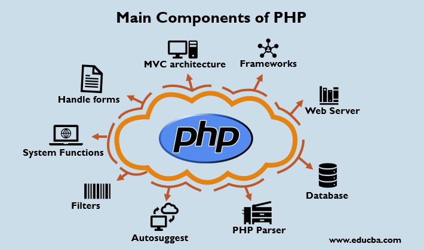

Python
links
- main page
- php
- Java
- C
- p4
introduction
PHP is one of the most widely used server side scripting language for web development. Popular websites like Facebook, Yahoo, Wikipedia etc, and our very own Studytonight, are developed using PHP.
PHP is so popular because it's very simple to learn, code and deploy on server, hence it has been the first choice for beginners since decades.
In this tutorial series we will be covering all the important concepts of Php language from basics to advanced and will also share some ready-to-use, useful code sinppets for beginners to kickstart their web development project.PHP stands for Hypertext Pre-Processor. PHP is a scripting language used to develop static and dynamic webpages and web applications. Here are a few important things you must know about PHP:
PHP is an Interpreted language, hence it doesn't need a compiler.
To run and execute PHP code, we need a Web server on which PHP must be installed.
PHP is a server side scripting language, which means that PHP is executed on the server and the result is sent to the browser in plain HTML.
PHP is open source and free.
Advantages
It has both procedure programming language and OOP (object oriented programming) language features. This means that the programmers from different programming language backgrounds can pick up this language within a short period of time. Most similar to C & C++ language syntax.
Open source: It is developed and maintained by a large group of developers. This will help in creating a support community and abundant extension libraries.
Speed: It is relatively fast, since it uses not much system resources.
Easy to use: It uses a C like syntax, so for those who are familiar with C, it’s very easy for them to pick up and easy to create website scripts.
Stable: Since it is maintained by many developers, bugs are rather found and fixed quickly, making it a stable software.
Powerful library support: You can easily find functional modules you need such a PDF, graph etc.
Built in database connection modules: You can connect to databases easily using PHP, since many websites are data/ content driven, so we will use database frequently, this will largely reduce the development time of web apps.
It can be run on many platforms, including Windows, Linux and Mac. therefore it’s easy for users to find hosting service providers.
MySQL is used with PHP as back end tool. Thee popular online database can be interfaced very well with PHP. So it’s been the excellent choice for webmasters. It has powerful output buffering. It can internally rearrange the buffer so that the headers comes before the content. It is dynamic and works in combination with HTML to display dynamic elements on the page.
It can be used with a large number of relational database management systems, runs on all of the web browsers (example: Apache, personal web server, Microsoft IIS, Netscape, iPlanet) and all databases (example: MySQL, dBase, IBM DB2, ODBC, PostgreSQL, Inter Base, Front Base, SQLite). PHP5 is fully object oriented language can be hosted nearly everywhere. Its documentation is excellent. PHP has a selection of decent CMS’s such as Drupal, Expression Engine and WordPress.
PHP runs in separate isolated processes within Apache so it is very difficult for anyone process to bring down the entire web browser. If anything goes wrong, there is minimal effect because PHP’s state is completely reset at the beginning of the each request. This ends up being more reliable than systems that use long-lived processes, that handle many requests. It’s completely free and no need to pay any fees. It is highly flexible and use it’s own memory space.
Community Support: A huge advantage the technology has is its community. If you are looking for a particular script, chances are another user has already created something similar. Check within the community for availability. Likewise, if you have created a function that other’s might enjoy, be sure to post the code for others.
Security: It offers security that can prevent malicious attacks. This can be adjusted for example in the .ini file.
Talent Availability: You can hire programmers with this technology skill more easily than any other language programmers since so many people know the language.
Bright Future: Although PHP is already well established, its future prospects are infinite. The keynote is that PHP is loosely typed. This makes simple scripts much faster to develop. One has to devote much less energy towards design.
Disadvantages
This comes from the ample language features. Some libraries written by a programmer from a procedure programming language may be difficult for programmers with an OOP background to maintain.
Security: Since it is open sourced, all people can see the source code. If there are bugs in the source code, it can be used by people to explore the weakness of it.
Not suitable of large applications: It will be difficult to use it for programming huge applications. Since the programming language is not highly modular, huge applications created out of the programming language will be difficult to maintain.
Weak type: Implicit conversion may surprise unwary programmers and lead to unexpected bugs. Confusion between arrays and hash tables. This is slow and could be faster. There are often a few ways to accomplish a task. It is not strongly typed. It is interpreted and uses curly braces.
Poor Error Handling Method: The framework has a bad error handling method. It is not a proper solution for the developers. Therefore, as a qualified PHP developer, you will have to overcome it.
PHP is unable to handle large number of apps: The technology is helpless to support a bunch of apps. It is highly tough to manage because, it is not competent modular. It already imitates the features of Java language.
It will not give the performance of, for example, “C” or “C++” languages. Because it is a scripting language and is interpreted it will be a bit slower than the optimized “C++” programs.
Conclusion
PHP is a very popular programming language So it is used by a large number of peoples for creating different types of applications. It is majorly used as server-side scripting language for websites. Some individuals have also used the language to create applications for Mac, Linux and Windows OS. The wide usage of the programming language, it’s clear that ‘advantages far supersedes the disadvantages’. So in general it is cheap, secure, fast for developing web applications.